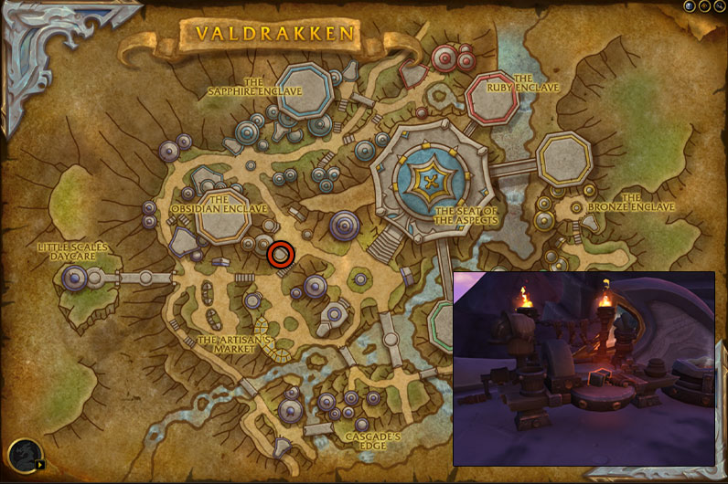
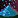
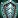
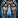

This Dragonflight Blacksmithing leveling guide will show you the fastest and easiest way to level your Dragonflight Blacksmithing skill up from 1 to 100.
This Dragonflight Blacksmithing leveling guide will show you the fastest and easiest way to level your Dragonflight Blacksmithing skill up from 1 to 100.
Table of contents
Dragonflight Blacksmithing Trainers
- Metalshaper Kuroko in Valdrakken.
- Kholmar Sunrunner in The Waking Shores.
- Farrier Josu in Ohn'ahran Plains.
- Custodian Vernagos in The Azura Span.
New Dragonflight Blacksmithing features
There are a lot of new stats added to professions in Dragonflight, so here is a quick explanation for some of these.
Recipe Difficulty
Recipe Difficulty shows you how much profession skill is required to make a recipe at the highest quality. You can see your current profession Skill below the Recipe Difficulty stat. Your Skill comes from your base profession skill, specializations, profession equipment, racials, and using high-quality reagents. So, your profession skill can go well above 100.
Item Quality
Every crafted piece of Blacksmithing armor and weapon has 5 different qualities. Blacksmithing Crafted Reagents, Enchantments, and Consumable items have 3 different qualities.
Basically, if you have higher skill, you can make higher-ilvl gear, higher-quality consumables that give more stat, and higher-quality reagents that give more profession skill when used in recipes.
Inspiration, Multicraft, Resourcefulness
- Inspiration: Each time you craft something, there is a chance you get Inspired and craft the recipe with some bonus profession skill, so you can craft an item with higher quality than you could normally.
- Resourcefulness: You have a chance to use fewer reagents.
- Multicraft: You have a chance to craft additional items. (doesn't work on crafted gear, only consumables and reagents)
Dragon Isles Blacksmithing Knowledge
Dragon Isles Blacksmithing Knowledge points are the "talent points" you can put into your profession specialization to learn new skills, stats, and bonuses.
Blacksmithing Crafting Orders
Crafting Orders are a new way for players to request a crafter to craft something for them. The interface looks like the Auction House, but instead of players posting Auctions, it will be filled with Crafting Orders you can complete as a Blacksmith.
Completing crafting orders can give you skill points if you complete orders for items that would normally give you a skill point.
How to Complete Crafting Orders
Clicking on the Crafting Orders tab at the bottom of your profession window will open up the Crafting Order UI, where you can browse Crafting Orders posted by other players. You must be near a Crafting Table for your profession to be able to access Crafting Orders.
Blacksmithing Crafting Table location
You can find the Blacksmithing crafting table in Valdrakken on the small platform marked in the picture below. For some reason, it is near the Mining trainer but not the Blacksmithing trainer!

Shopping List
This is the total list of materials required to reach 100.
The quality doesn't matter for leveling. Buy the cheapest.
- 300x
 Draconium Ore
Draconium Ore - 650x
 Serevite Ore
Serevite Ore - 170x

Primal Flux (Vendor) - 168x Primal Molten Alloy
Leveling Dragonflight Blacksmithing
Racial Bonuses
Some races have a profession skill bonus as a racial trait, allowing recipes to remain orange for 2-5 extra points. This means you can save gold by crafting lower-level recipes to gain additional skill points.
These races are:
- Lightforged Draenei: +5 skill
- Dark Iron Dwarves:+5 skill
- Kul Tiran: +2 skill
First Craft Bonus
You will get 1x Dragon Isles Blacksmithing Knowledge talent point each time you craft something for the first time. Dragon Isles Blacksmithing Knowledge is very valuable and has a weekly cap from other sources.
So, sometimes you will see I recommend crafting a recipe that's slightly more expensive to make. This is because I think it's better to get the bonuses while they give you skill points. You will want to get all of them eventually.
Primal Flux is sold by blacksmithing supply vendors. If you are leveling in Valdrakken, you can buy it from Kognir.
1 - 7
1x Explorer's Plate Bracers - 8x Serevite Ore, 3x Draconium Ore
1x  Draconium Blacksmith's Hammer - 10x Serevite Ore, 2x Draconium Ore
Draconium Blacksmith's Hammer - 10x Serevite Ore, 2x Draconium Ore
If you need a  Blacksmith Hammer to craft these items, you can buy one from Provisioner Thom in Valdrakken. (or any other blacksmithing supply vendor).
Blacksmith Hammer to craft these items, you can buy one from Provisioner Thom in Valdrakken. (or any other blacksmithing supply vendor).
Equip the  Draconium Blacksmith's Hammer. You can destroy the
Draconium Blacksmith's Hammer. You can destroy the  Blacksmith Hammer. You won't need it anymore.
Blacksmith Hammer. You won't need it anymore.
7 - 10
1x  Draconium Pickaxe - 10x Serevite Ore, 2x Draconium Ore
Draconium Pickaxe - 10x Serevite Ore, 2x Draconium Ore
10 - 17
1x  Draconium Sickle - 10x Serevite Ore, 2x Draconium Ore
Draconium Sickle - 10x Serevite Ore, 2x Draconium Ore
1x Explorer's Plate Chestguard - 10x Serevite Ore, 3x Draconium Ore
17 - 21
Make sure to craft these next two in the same order listed here.
1x  Draconium Skinning Knife - 10x Serevite Ore, 3x Draconium Ore
Draconium Skinning Knife - 10x Serevite Ore, 3x Draconium Ore
1x  Draconium Blacksmith's Toolbox - 12x Serevite Ore, 3x Draconium Ore
Draconium Blacksmith's Toolbox - 12x Serevite Ore, 3x Draconium Ore
Equip the  Draconium Blacksmith's Toolbox.
Draconium Blacksmith's Toolbox.
21 - 26
1x  Draconium Leatherworker's Knife - 12x Serevite Ore, 3x Draconium Ore
Draconium Leatherworker's Knife - 12x Serevite Ore, 3x Draconium Ore
1x
Blacksmithing Specializations
When you hit 25, you will unlock Blacksmithing specializations.
Which Specialization to choose first?
I recommend choosing Armorsmithing as your first specialization. (you can learn all 4 as you level up your profession)
You will need 50 skill points to unlock the second specialization, 65 for the third, and 75 for the fourth. 65 is very easy to reach, but it may take a little longer to level to 75.
Where should you put your Dragon Isles Blacksmithing Knowledge talent points?
Don't spend any points yet. I recommend leveling your profession to 65 first. You will need 20 points to unlock a recipe that you will use to level Blacksmithing. (more on this later)
26 - 31
Craft them in the same order as listed!
1x Draconium Axe - 12x Serevite Ore, 6x Draconium Ore
1x  Draconium Leatherworker's Toolset - 12x Serevite Ore, 6x Draconium Ore
Draconium Leatherworker's Toolset - 12x Serevite Ore, 6x Draconium Ore
31 - 37
1x  Draconium Needle Set - 10x Serevite Ore, 4x Draconium Ore
Draconium Needle Set - 10x Serevite Ore, 4x Draconium Ore
1x Explorer's Expert Clasp - 10x Serevite Ore, 4x Draconium Ore
37 - 41
2x 
41 - 45
1x Draconium Great Axe - 20x Serevite Ore, 10x Draconium Ore
1x Explorer's Expert Gauntlets - 12x Serevite Ore, 6x Draconium Ore
45 - 51
1x Draconium Stiletto - 12x Serevite Ore, 6x Draconium Ore
2x Explorer's Expert Spaulders - 24x Serevite Ore, 12x Draconium Ore
50 - 65
1x Draconium Great Mace - 20x Serevite Ore, 10x Draconium Ore
25x Explorer's Expert Helm - 350x Serevite Ore, 175x Draconium Ore
The Helm recipe will be green for the last few points, so you might have to make more.
65 - 100
From this point, almost every recipe that give you skill point requires a  Spark of Ingenuity. This crafting reagent Binds on Pickup (BoP), so you can't just buy it from the Auction House.
Spark of Ingenuity. This crafting reagent Binds on Pickup (BoP), so you can't just buy it from the Auction House.
Below is a step-by-step guide on how to get  Spark of Ingenuity to level your profession. Step 1 is the most time-consuming, but it's account-wide, and it's something you probably already completed.
Spark of Ingenuity to level your profession. Step 1 is the most time-consuming, but it's account-wide, and it's something you probably already completed.
Step 1. #Dragonflight campaign quests
To get Spark of Ingenuity, you must complete the Dragonflight main story campaign quests until you unlock World Quests. This is ACCOUNT-WIDE, so you only need to complete these quests with one of your characters. If you open your quest log, you will find these quests at the top in the campaign section under the "Dragonflight" title.
- Complete the Dragonflight campaign quests until you get
 Renown of the Dragon Isles from Alexstrasza the Life-Binder.
Renown of the Dragon Isles from Alexstrasza the Life-Binder. - Talk to Therazal to complete Renown of the Dragon Isles.
Step 2. #Engine of Innovation Questline
Pick up the  Learning Ingenuity quest from Therazal. This quest will start the Engine of Innovation Questline that will award you with Spark of Ingenuity.
Learning Ingenuity quest from Therazal. This quest will start the Engine of Innovation Questline that will award you with Spark of Ingenuity.
Talk to Greyzik Cobblefinger to complete  Learning Ingenuity and pick up the
Learning Ingenuity and pick up the  Jump-Start? Jump-Starting! quest.
Jump-Start? Jump-Starting! quest.
If you have already completed the Engine of Innovation Questline with one of your characters, you don't have to do it again. Talk to Greyzik Cobblefinger to skip the quests, and then talk to Maiden of Inspiration to get your 5x  Spark of Ingenuity.
Spark of Ingenuity.
Otherwise, you must complete the entire Engine of Innovation Questline until you get all five  Spark of Ingenuity.
Spark of Ingenuity.
Step 3. #Spending Knowledge Points and Crafting Bracers
Put your first 20 points in the Armorsmithing specialization like this:
- Put 10 points into Armorsmithing.
- Learn the Fine-Armor sub-specialization, then put 10 points into Fine-Armor.
- Learn the Vambraces sub-specizalization. This will teach you the Primal Molten Vambraces recipe.
Craft 5x Primal Molten Vambraces - 70x Primal Molten Alloy
You can make any other Primal Molten armor if you have more knowledge points to spend. You can learn the other recipes the same way in the other sub-specializations.
Step 4. #Getting more Sparks
To level to 100, you will need another 8x  Spark of Ingenuity. Unfortunately, you can't get more than 5 on one character. However, you can use the crafting order system to send crafting orders to your characters, so you can get more from your alts or by creating trial characters.
Spark of Ingenuity. Unfortunately, you can't get more than 5 on one character. However, you can use the crafting order system to send crafting orders to your characters, so you can get more from your alts or by creating trial characters.
Creating a trial character
If you have two level 58 alt characters, you can skip this part and use them instead of creating trials.
- Go to the character selection screen and click "Create New Character" in the bottom left corner.
- On the character creation page, tick the "Class Trial" box in the bottom left corner.
- Choose any class and talents, then create your Character.
- Go to the portal room in Orgrimmar/Stormwind and click on the Valdrakken portal.
Skipping quests to get 5x Sparks
- Talk to Greyzik Cobblefinger about skipping the quests, and then talk to Maiden of Inspiration.
- Talk to the crafting order NPC Clerk Silverpaw in Valdrakken.
- Click on Armor -> Plate -> Wrist, then click "Search" and pick Primal Molten Vambraces.
- Change Public Order to Personal Order in the top right, then type in your main character name.
- You don't have to fill in materials besides the Spark of Ingenuity in the "Spark" slot. You can fill the rest of the materials with your main.
- Log in with your main, and go to the Blacksmithing crafting table in Valdrakken. (scroll back to the crafting order section above in the guide if you don't know where it is)
- Open your profession window and click the Crafting Orders tab at the bottom.
- Click on the Personal Tab and complete the Primal Molten Vambraces crafting orders from your alts.
- Repeat these steps above until you reach 100.